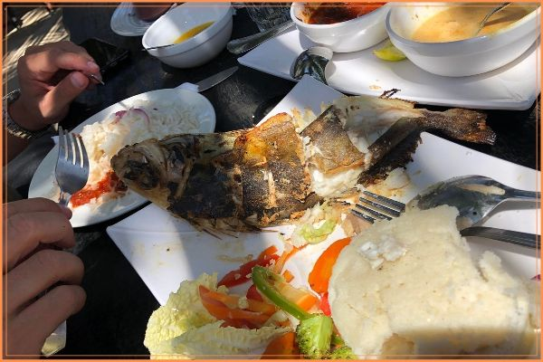

Lokale basisvoedingsmiddelen die u moet proberen als u in Afrika bent
De culinaire tradities van Afrika zijn zo divers als de vele culturen op het continent. Ze weerspiegelen niet alleen de enorme rijkdom van deze diversiteit, maar zijn ook doordrenkt met een scala aan kruiden en smaken. Elke regio heeft zijn eigen unieke kenmerken, waardoor Afrikaanse gerechten variëren van regio tot regio. Vaak wordt aangeraden om de meeste Afrikaanse gerechten met de blote handen te eten, een subtiele kunst waarbij de punt van drie of vier vingers van de dominante hand wordt gebruikt. Hoewel bestek altijd een optie is, voegt het niet dezelfde charme toe. Naast talloze heerlijke stoofschotels, soepen en snacks, volgt hieronder een beknopte lijst van de beste lokale gerechten die een must zijn om te proberen als je je in Afrika bevindt.
Ugali (Tanzania/Kenia)
Hoewel dit zetmeelrijke, polenta-achtige bijgerecht in Kenia en Tanzania bekend staat als Ugali, is het een delicatesse die in verschillende Afrikaanse landen wordt genoten, zij het met verschillende namen. Onder de lokale bevolking van Malawi en Zambia wordt het bijvoorbeeld Nsima of Nshima genoemd, terwijl de Zimbabwanen het sadza noemen. Het wordt meestal geserveerd met stoofschotels van vlees of groenten, groenten en zure melk, waardoor een verrassende explosie van smaken in de mond ontstaat. Ugali wordt meestal met de vingers gegeten, waarbij je een balletje pap eraf trekt, het zachtjes rolt en vervolgens met je duim een inkeping vormt, die wordt gebruikt om de bijbehorende stoofschotels en andere gerechten op te scheppen.
Ingrediënten koken
- 4 kopjes water
- 1 theelepel zout
- 2 kopjes versgemalen witte maïsmeel
Injera (Ethiopië)

Gemaakt met teff, een klein rond graan dat groeit in de hooglanden van Ethiopië, is Injera een sponsachtig zuur plat brood dat wordt gebruikt om vlees op te scheppen, waardoor het ook een smakelijk gebruiksvoorwerp is. Het wordt vaak het beste geserveerd in een groot dienblad waarop de stoofschotels worden geserveerd, waarbij de sappen worden opgezogen naarmate de maaltijd vordert, en gegarneerd met veel gerechten, van bonen tot vlees en groenten.
Ingrediënten koken
- ¼ kopje teffmeel
- ¾ kopje bloem voor alle doeleinden
- 1 kopje water
- Een snufje zout
- Plantaardige of arachideolie
Peri Peri Kip (Mozambique)
Peri Peri-kip is een verrukkelijke maaltijd, geserveerd met grote kommen knapperige salades en warme friet of Portugees brood. Het is een van de meest populaire gerechten in Mozambique en veruit een van de sappigste, prachtig gebruinde gebraden kippen die je ooit zou zien. Het is ook gemaakt met een sprankelende, rokerige, pittige kokosroomsaus. Wanneer u in een restaurant bent, kan de geur van de grill die door de lucht zweeft uw mond doen watertanden en ervoor zorgen dat u er gewoon in wilt duiken, zelfs voordat het vlees goed gaar is.
Ingrediënten koken
- 100 ml olijfolie
- 8 geperste teentjes knoflook
- ½ kopje vers geperst citroensap
- 1 eetlepel paprikapoeder
- Kokosmelk
- 8 gescheurde laurierblaadjes
- Hele kip in stukjes gesneden
- 2 eetlepels periperi